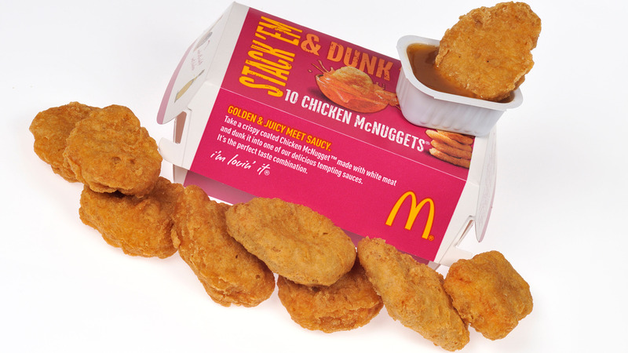

Ingredients
McDonald's tender and juicy nugget !
- 3 chicken fillets, boneless, skin removed and diced
- 1 ½ tsp salt
- 2 large eggs
- 1 ½ cups corn starch, divided
- 1 cup water
- 1 tbsp onion powder
- 1 tbsp garlic powder
- 2 tbsp yellow mustard
- 1 tsp ground black pepper
- 1 cup all-purpose flour
Instructions
- Put one egg and the salt into a food processor along with the chicken. Blend until a paste-like consistency is achieved.
- Put the corn starch in a small dish or other container. Form a handful of mixed chicken into a nugget with damp palms. Dredge the nugget in corn starch, shaking off any excess, and transfer to a baking sheet lined with parchment paper. Before proceeding to the next step, finish coating and shaping the nuggets.
- Mix the water, one egg, mustard, onion and garlic powder, ground pepper, and all-purpose flour in a big bowl. The batter has to be thick but not runny. After dipping each nugget in the batter, return it to the baking sheet that has been lined.
- After putting the tray in the freezer, give them an hour to freeze.
- Bring your oil's temperature up to 350 degrees. The first batch is deep-fried for five minutes. Give the chicken nuggets three to four minutes to drain on paper towels. Repeatedly deep fried the same batch for five minutes. By doing this, you can make sure the chicken cooks thoroughly without turning too dark.
- With any dipping sauce, serve these nuggets warm.